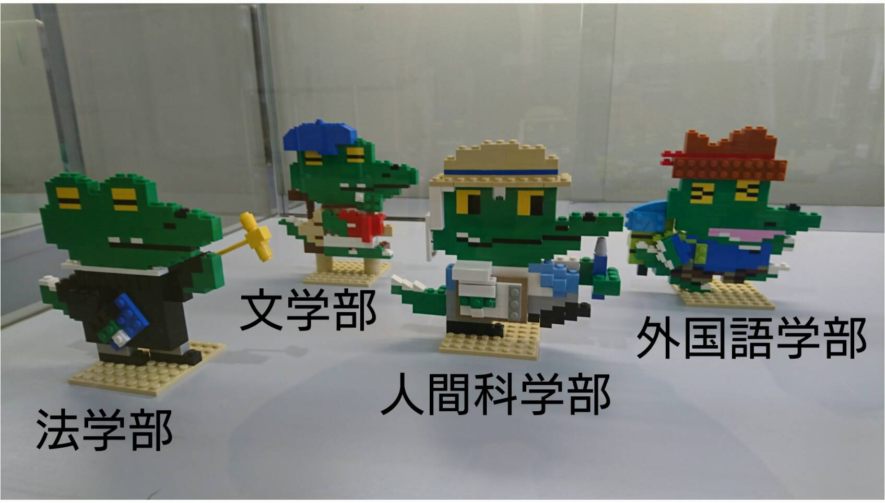
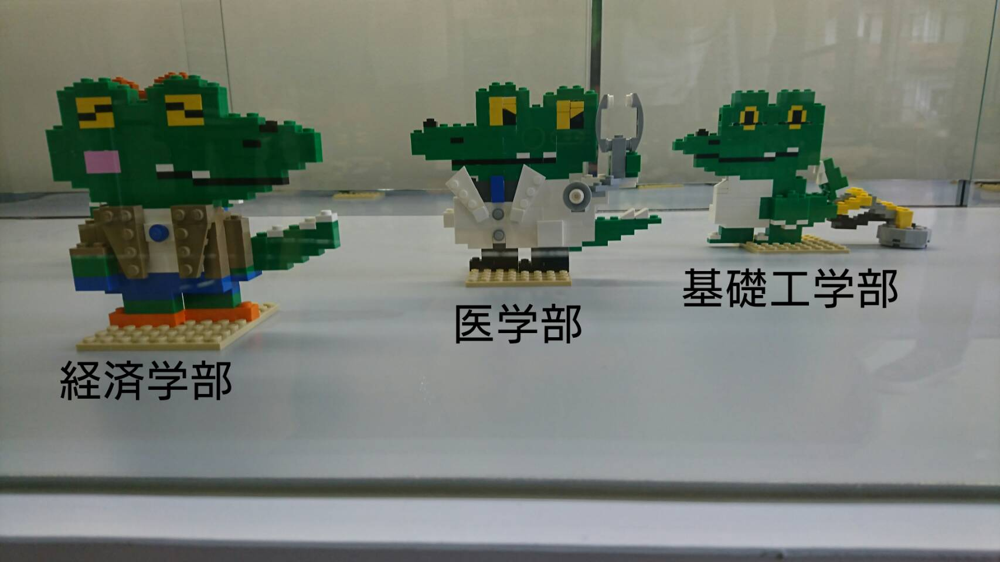
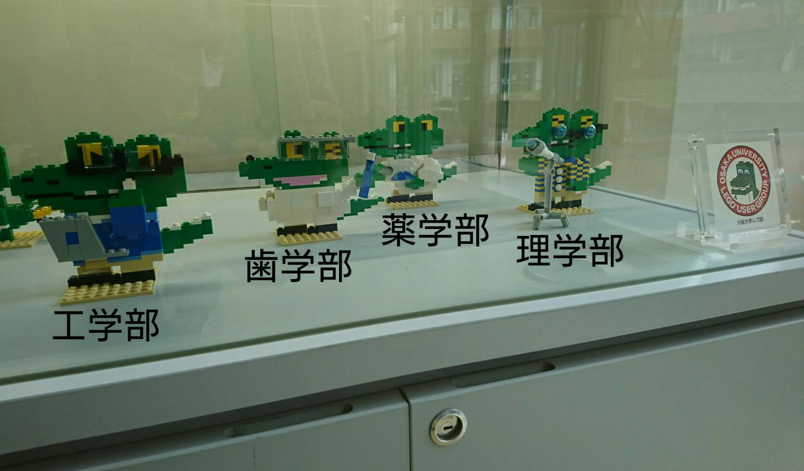

過去の製作依頼 大阪大学全１１学部のワニ博士！ 本作品は、大阪大学全学教育推進機構様より、「マチカネゼミ」をテーマとした作品の依頼を頂き制作したものです。 私たち大阪大学レゴ部は、「阪大全１１学部のワニ博士」を再現しました！    ちなみにワニ博士は、阪大公式キャラクターです(もっと知りたい方はコチラ！)。 この作品を通して、もし阪大レゴ部に興味を持たれた方は、是非私たちの各種ＳＮＳもチェックしてみて下さい！